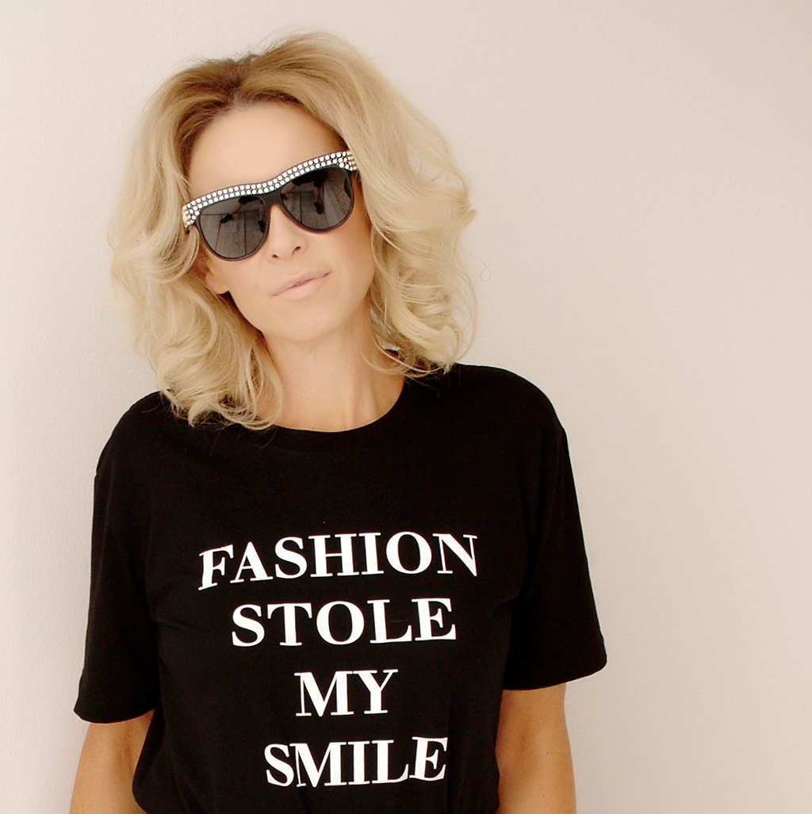

About
Hi there, I’m a trained personal stylist working out of windy Wellington. With over 15 years experience in the fashion industry, spanning London and New Zealand with knowledge across production, fabrics, sales, colour analysis and design.
From a young age fashion has always been my passion, I love how an outfit can make you feel. I love using my knowledge to create exciting and inspiring wardrobes for my clients.
Training

I completed the colour, style and fashion consultancy training course with highly acclaimed personal stylist Stacey Beatson here in New Zealand. We learnt about body types, style personality, line and design, colour, wardrobing, personal shopping and business development. Stacey’s extensive knowledge about personal styling was invaluable.
I studied the Principles of Personal Styling 1 and 2 at the London University of Arts College of Fashion. Taught by renowned UK image consultant Polly Holman. This covered cut and fabric, colour combination, figure shapes and types, styling tricks, accessorising, personality, capsule wardrobes, weddings and creating look books.
I completed a Bachelor of Fashion at Wanganui Universal College of Learning. This was a three year degree covering design, sewing, pattern making, photography and arts. We designed and created an end of year fashion collection and runway show. It was amazing seeing it all come together and made my passion for fashion even stronger.
I completed the internationally recognised Advanced Multi-Racial Colour Analysis Course by Image Innovators Australia. I studied in depth the history of colour theory, colour temperature, intensity and value, personal base colour direction analysis and secondary colour analysis. I was shown how to perform colour consultations on men and women, facilitate colour seminars and workshops. Completing this training has enabled me to dress my clients in their absolute best colours.
Available for new bookings
Start with a free 30 minute style consultation over FaceTime or Zoom. No pressure, just a relaxed chat about you.
Get in touch